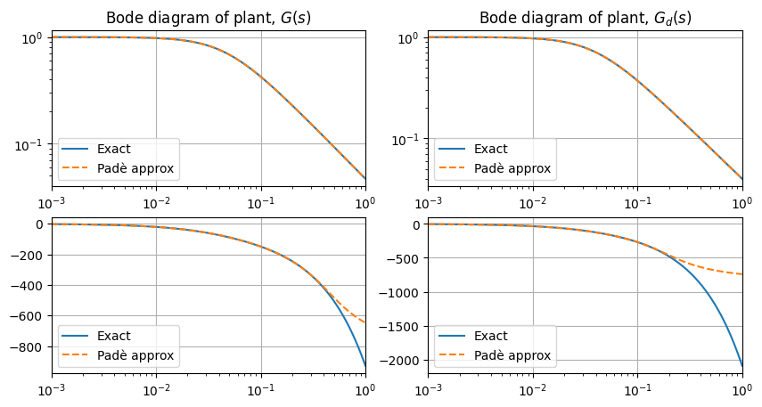
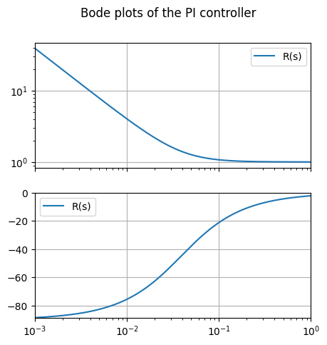
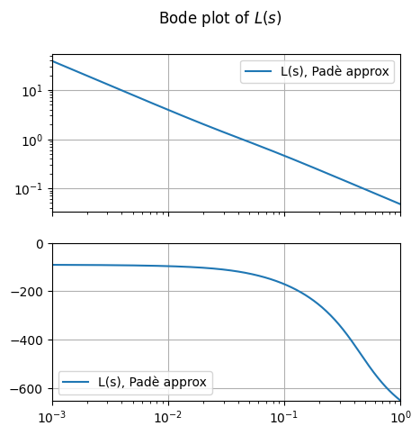
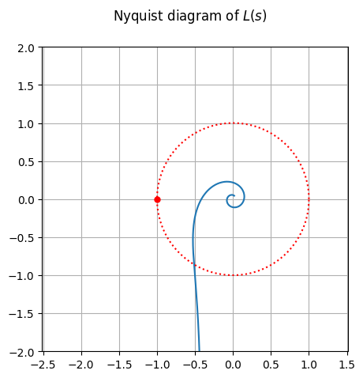
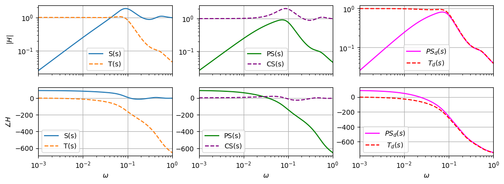
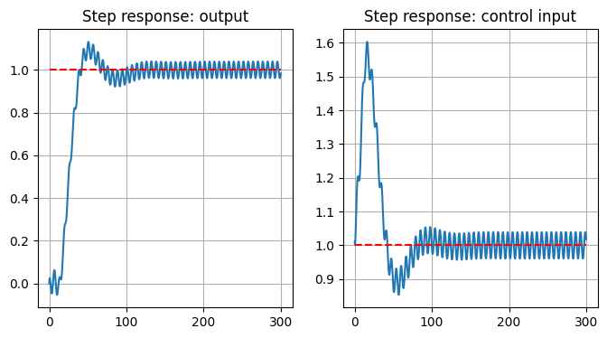

43.2. First order system w/ time delay - Reference tracking#
The same as the example first order system - reference tracking, with a time delay from the input to the output.
43.2.1. Libraries#
Show code cell source
# Install the control library if running in Colab
try:
import control as ct
except ImportError:
!python3.11 -m pip install control
import numpy as np
import scipy as sp
import control as ct
import matplotlib.pyplot as plt
print(ct.__version__)
0.10.2
43.2.2. Plant model#
Plant model from mathworks. https://www.mathworks.com/help/control/ug/temperature-control-in-a-heat-exchanger.html. First order + time delay. This example assumes measurable disturbance \(d(t)\), so that they can feed a feedforward controller. This assumption is not made here. The plant is described by the following transfer functions between the output \(Y(s) = T(s)\) (the measurement of temperature) and the control input \(U(s) = V(s)\) (the voltage input to the heat exchanger) and the exogenous input \(D\),
State-space realization, with \(y(s) = x_1(s) + x_2(s)\), with \(x_1\) from control input, and \(x_2\) from disturbances,
Show code cell source
#> Parameters of the system
a , tau = 21.3, 14.7
a_d, tau_d = 25.0, 35.0
#> Transfer function output/control input
num_G = [1]
den_G = [a, 1]
G_no_delay = ct.TransferFunction(num_G, den_G)
# w/o Padé approximation of time delay
G_pure = G_no_delay.copy()
G_pure.io_delay = tau
# w/ Padè approximation of time delay
# Rational approximation is required by control library to:
# - perform state-space realization
# - time-domain simulation
# - time-domain control design
n_pade = 4
num_delay, den_delay = ct.pade(tau, n_pade)
G_delay_pade = ct.TransferFunction(num_delay, den_delay)
G_pade = ct.series(G_no_delay, G_delay_pade)
#> Transfer function output/disturbance
num_G_d = [1]
den_G_d = [a_d, 1]
G_d_no_delay = ct.TransferFunction(num_G_d, den_G_d)
# w/o Padé approximation of time delay
G_d_pure = G_d_no_delay.copy()
G_d_pure.io_delay = tau_d
# w/ Padè approximation of time delay
# Rational approximation is required by control library to:
# - perform state-space realization
# - time-domain simulation
# - time-domain control design
n_pade = 4
num_d_delay, den_d_delay = ct.pade(tau_d, n_pade)
G_d_delay_pade = ct.TransferFunction(num_d_delay, den_d_delay)
G_d_pade = ct.series(G_d_no_delay, G_d_delay_pade)
Show code cell source
# Plotting
fig, ax = plt.subplots(2,2, figsize=(10,5))
# Bode plot for both
# Note: plot=False allows us to capture data or customize the plot easily
omega = np.logspace(-3, 0, 500)
G_pure_jom = G_pure.frequency_response(omega)
G_pade_jom = G_pade.frequency_response(omega)
G_d_pure_jom = G_d_pure.frequency_response(omega)
G_d_pade_jom = G_d_pade.frequency_response(omega)
# Manually add time delay to G_pure, as it looks like it's not getting time delay
ax[0,0].plot(G_pure_jom.omega, G_pure_jom.magnitude, label='Exact')
ax[0,0].plot(G_pade_jom.omega, G_pade_jom.magnitude, '--', label='Padè approx')
ax[0,0].legend()
ax[0,0].set_xscale('log')
ax[0,0].set_yscale('log')
ax[0,0].set_xlim(omega[0], omega[-1])
ax[0,0].grid()
ax[1,0].plot(G_pure_jom.omega, np.rad2deg(np.unwrap(G_pure_jom.phase - omega * tau)), label='Exact')
ax[1,0].plot(G_pade_jom.omega, np.rad2deg(np.unwrap(G_pade_jom.phase)), '--', label='Padè approx')
ax[1,0].legend()
ax[1,0].set_xscale('log')
ax[1,0].set_xlim(omega[0], omega[-1])
ax[1,0].grid()
ax[0,1].plot(G_pure_jom.omega, G_d_pure_jom.magnitude, label='Exact')
ax[0,1].plot(G_pade_jom.omega, G_d_pade_jom.magnitude, '--', label='Padè approx')
ax[0,1].legend()
ax[0,1].set_xscale('log')
ax[0,1].set_yscale('log')
ax[0,1].set_xlim(omega[0], omega[-1])
ax[0,1].grid()
ax[1,1].plot(G_pure_jom.omega, np.rad2deg(np.unwrap(G_d_pure_jom.phase - omega * tau_d)), label='Exact')
ax[1,1].plot(G_pade_jom.omega, np.rad2deg(np.unwrap(G_d_pade_jom.phase)), '--', label='Padè approx')
ax[1,1].legend()
ax[1,1].set_xscale('log')
ax[1,1].set_xlim(omega[0], omega[-1])
ax[1,1].grid()
ax[0,0].set_title(f"Bode diagram of plant, $G(s)$")
ax[0,1].set_title(f"Bode diagram of plant, $G_d(s)$")
plt.show()

43.2.3. Control design#
Here a low-order regulator with TF \(R(s)\) is designed for tracking a desired step-input.
The regulator takes the tracking error \(e(t)\) as an input and returns the plant control input \(u(t)\) as its output. Using TF algebra in Laplace domain (for the forced response)
so that the closed-loop TFs are
The control input can be written as a function of \(y_{\text{ref}}\) and \(d\) as well
so that
43.2.3.1. PI controller#
With \(e(t) := y_{\text{ref}}(t) - y(t)\)
Open-loop TF from error to output \(y(s) = L(s) e(s) = R(s) G(s) e(s)\) reads
Show code cell source
#> Parameters of the PI controller
Kc = 1.01
tau_c = 25.8
Kp, Ki = Kc, Kc/tau_c
num_PI = [Kp, Ki]
den_PI = [1, 0]
R_PI = ct.TransferFunction(num_PI, den_PI)
Show code cell source
R_PI_jom = R_PI.frequency_response(omega)
fig, ax = plt.subplots(2,1, figsize=(5,5))
ax[0].plot(R_PI_jom.omega, R_PI_jom.magnitude, label='R(s)')
ax[0].legend()
ax[0].set_xscale('log')
ax[0].set_yscale('log')
ax[0].set_xlim(omega[0], omega[-1])
ax[0].set_xticklabels([])
ax[0].grid()
ax[1].plot(R_PI_jom.omega, np.rad2deg(np.unwrap(R_PI_jom.phase)), label='R(s)')
ax[1].legend()
ax[1].set_xscale('log')
ax[1].set_xlim(omega[0], omega[-1])
ax[1].set_ylim(np.min(np.rad2deg(np.unwrap(R_PI_jom.phase))), np.max([0, np.max(np.rad2deg(np.unwrap(R_PI_jom.phase)))]))
ax[1].grid()
fig.suptitle("Bode plots of the PI controller")
plt.show()

Show code cell source
#> Open-loop transfer function
L_pade = ct.series(R_PI, G_pade)
#> Frequency response of the open-loop TF
L_pade_jom = L_pade.frequency_response(omega)
fig, ax = plt.subplots(2,1, figsize=(5,5))
ax[0].plot(L_pade_jom.omega, L_pade_jom.magnitude, label='L(s), Padè approx')
ax[0].legend()
ax[0].set_xscale('log')
ax[0].set_yscale('log')
ax[0].set_xlim(omega[0], omega[-1])
ax[0].set_xticklabels([])
ax[0].grid()
ax[1].plot(L_pade_jom.omega, np.rad2deg(np.unwrap(L_pade_jom.phase)), label='L(s), Padè approx')
ax[1].legend()
ax[1].set_xscale('log')
ax[1].set_xlim(omega[0], omega[-1])
ax[1].set_ylim(np.min(np.rad2deg(np.unwrap(L_pade_jom.phase))), np.max([0, np.max(np.rad2deg(np.unwrap(L_pade_jom.phase)))]))
ax[1].grid()
fig.suptitle("Bode plot of $L(s)$")
#> Nyquist plot
side_l = 4
xc, yc = -.5, 0.
L_pade_jom_complex = L_pade_jom.magnitude * np.exp(1j * L_pade_jom.phase)
fig, ax = plt.subplots(figsize=(5,5))
ax.plot(np.real(L_pade_jom_complex), np.imag(L_pade_jom_complex))
ax.plot([-1], [0], 'o', ms=5, color='red')
ax.plot(np.cos(np.linspace(0,2*np.pi,100)), np.sin(np.linspace(0,2*np.pi,100)), ':', color='red')
ax.axis('equal')
ax.set_xlim(xc-side_l/2, xc+side_l/2)
ax.set_ylim(yc-side_l/2, yc+side_l/2)
fig.suptitle("Nyquist diagram of $L(s)$")
ax.grid()
Ignoring fixed x limits to fulfill fixed data aspect with adjustable data limits.


43.2.3.2. Optimal controller#
43.2.4. Closed-loop transfer functions - gang of the four#
Show code cell source
G_jom_complex = G_pade_jom.magnitude * np.exp(1j * G_pade_jom.phase)
R_jom_complex = R_PI.frequency_response(omega).magnitude * np.exp(1j * R_PI.frequency_response(omega).phase)
G_d_jom_complex = G_d_pade_jom.magnitude * np.exp(1j * G_d_pade_jom.phase)
#> Sensitivity, S = 1 / ( 1 + L )
S_jom_complex = 1 / ( 1 + L_pade_jom_complex )
#> Complementary sensitivity, T = L / ( 1 + L )
T_jom_complex = L_pade_jom_complex / ( 1 + L_pade_jom_complex )
#> Load sensitivity, PS = G / ( 1 + L )
PS_jom_complex = G_jom_complex / ( 1 + L_pade_jom_complex )
#> Noise sensitivity, CS = R / ( 1 + L )
CS_jom_complex = R_jom_complex / ( 1 + L_pade_jom_complex )
#> From disturbance to tracking error (or to output), Gd / ( 1 + L )
PS_d_jom_complex = G_d_jom_complex / ( 1 + L_pade_jom_complex )
#> From disturbance d to control input u, R Gd / ( 1 + L )
T_d_jom_complex = R_jom_complex * G_d_jom_complex / ( 1 + L_pade_jom_complex )
Show code cell source
#> Frequency response of the open-loop TF
L_pade_jom = L_pade.frequency_response(omega)
fig, ax = plt.subplots(2,3, figsize=(12,4))
ax[0,0].plot(omega, np.abs( S_jom_complex), label='S(s)')
ax[0,0].plot(omega, np.abs( T_jom_complex), '--', label='T(s)')
ax[0,0].legend()
ax[0,0].set_xscale('log')
ax[0,0].set_yscale('log')
ax[0,0].set_xlim(omega[0], omega[-1])
ax[0,0].set_xticklabels([])
ax[0,0].grid()
ax[1,0].plot(omega, np.rad2deg(np.unwrap(np.angle( S_jom_complex))), label='S(s)')
ax[1,0].plot(omega, np.rad2deg(np.unwrap(np.angle( T_jom_complex))), '--', label='T(s)')
ax[1,0].legend()
ax[1,0].set_xscale('log')
ax[1,0].set_xlim(omega[0], omega[-1])
ax[1,0].grid()
ax[0,1].plot(omega, np.abs(PS_jom_complex), label='PS(s)', color='green')
ax[0,1].plot(omega, np.abs(CS_jom_complex), '--', label='CS(s)', color='purple')
ax[0,1].legend()
ax[0,1].set_xscale('log')
ax[0,1].set_yscale('log')
ax[0,1].set_xlim(omega[0], omega[-1])
ax[0,1].set_xticklabels([])
ax[0,1].grid()
ax[1,1].plot(omega, np.rad2deg(np.unwrap(np.angle(PS_jom_complex))), label='PS(s)', color='green')
ax[1,1].plot(omega, np.rad2deg(np.unwrap(np.angle(CS_jom_complex))), '--', label='CS(s)', color='purple')
ax[1,1].legend()
ax[1,1].set_xscale('log')
ax[1,1].set_xlim(omega[0], omega[-1])
ax[1,1].grid()
ax[0,2].plot(omega, np.abs(PS_d_jom_complex), label='$PS_d(s)$', color='magenta')
ax[0,2].plot(omega, np.abs( T_d_jom_complex), '--', label=' $T_d(s)$', color='red')
ax[0,2].legend()
ax[0,2].set_xscale('log')
ax[0,2].set_yscale('log')
ax[0,2].set_xlim(omega[0], omega[-1])
ax[0,2].set_xticklabels([])
ax[0,2].grid()
ax[1,2].plot(omega, np.rad2deg(np.unwrap(np.angle(PS_d_jom_complex))), label=r'$PS_d(s)$', color='magenta')
ax[1,2].plot(omega, np.rad2deg(np.unwrap(np.angle( T_d_jom_complex))), '--', label=r' $T_d(s)$', color='red')
ax[1,2].legend()
ax[1,2].set_xscale('log')
ax[1,2].set_xlim(omega[0], omega[-1])
ax[1,2].grid()
ax[0,0].set_ylabel(r"$|H|$")
ax[1,0].set_ylabel(r"$\angle H$")
ax[1,0].set_xlabel(r"$\omega$")
ax[1,1].set_xlabel(r"$\omega$")
ax[1,2].set_xlabel(r"$\omega$")
# ax[1].plot(L_pade_jom.omega, np.rad2deg(np.unwrap(L_pade_jom.phase)), label='L(s), Padè approx')
# ax[1].legend()
# ax[1].set_xscale('log')
# ax[1].set_xlim(omega[0], omega[-1])
# ax[1].set_ylim(np.min(np.rad2deg(np.unwrap(L_pade_jom.phase))), np.max([0, np.max(np.rad2deg(np.unwrap(L_pade_jom.phase)))]))
# ax[1].grid()
Text(0.5, 0, '$\\omega$')

43.2.4.1. Time-domain response#
Show code cell source
# todo:
# - evaluate the proper TF from distrubance to y
# - repeat the process to get the control input as the output of closed-loop systems
# as a function of reference signal and of disturbance, in order to show the input load
sys_cl = ct.feedback(ct.series(R_PI, G_pade), 1)
sys_cl_d = G_d_pade / ( 1 + R_PI * G_pade )
sys_cl_u_ref = R_PI / ( 1 + R_PI * G_pade )
sys_cl_u_d = -R_PI * G_d_pade / ( 1 + R_PI * G_pade )
Show code cell source
#> Step response
time = np.linspace(0, 300, 1000)
t, y = ct.step_response(sys_cl , time)
t, u = ct.step_response(sys_cl_u_ref, time)
#> Response to harmonic disturbances
# obs T_d(omega = 1) ~ 0.04
omega_d = 1.0
ampl_d = 1.
d = ampl_d * np.cos(omega_d * time)
t, y_d = ct.forced_response(sys_cl_d , time, d)
t, u_d = ct.forced_response(sys_cl_u_d, time, d)
print(np.abs(G_d_jom_complex[-1])) # if omega 1 is the last element of the omega vector
0.03996803834887157
Show code cell source
fig, ax = plt.subplots(1,2, figsize=(8, 4))
ax[0].plot(t, y+y_d)
ax[0].plot(t, np.ones(np.shape(t)), '--', color='red')
ax[0].set_title("Step response: output")
ax[0].grid()
ax[1].plot(t, u+u_d)
ax[1].plot(t, np.ones(np.shape(t)), '--', color='red')
ax[1].set_title("Step response: control input")
ax[1].grid()
plt.show()

Model error using Padé approximation in time simulation. Only Padé approximation for time delay is supported for state-space representation and time response simulation. Here, the response to a step of closed-loop system with Padé approximation of the time delay is non-zero in \(t \in [0, \tau]\), but shows “small-amplitude” oscillations.
Effect of the disturbances. Here the harmonic disturbances have frequency \(\omega_d\) much larger than the cutting frequency \(\omega_c\). Thus, \(d\) produces the output \(y_d(\omega_d) = T_d(\omega_d) d(\omega_d)\), with gain \(|G(\omega_d)| \simeq .04\) Thus, even with a disturbance \(d\) with the same amplitude as the reference step signal, the oscillations around the desired output have “small” amplitude, \(y_d \simeq A_d \cos( \omega_d t + \varphi_d)\), with \(A_d = |T_d(\omega_d)| |d(\omega_d)| \simeq .04 |d(\omega_d)|\).